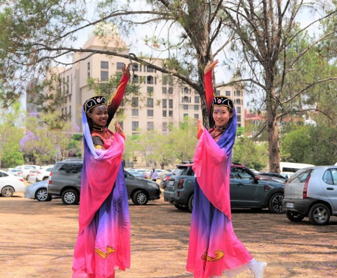

Home Page
Chinese Classical Dancing
As a South African who has been learning Mandarin,
I have discovered a newfound passion for Chinese dance.
What started as a casual interest has evolved into a regular
performance opportunity, thanks to the guidance of my Chinese teacher.
I now frequently perform for Chinese companies in South Africa,
showcasing the beauty and grace of traditional Chinese dances such as
the Peacock Dance. It's been a fulfilling journey of cultural
exploration, and I am excited to continue to learn and grow in
my love for Chinese dance.
- Originated in the Han Dynasty
- Performed by women
- Elegant and graceful movements
- Vibrant and intricate costumes
- Feather headdresses resembling peacock feathers
- Use of props like fans and ribbons
- Traditional dances of Xinjiang
- Reflects the diverse cultural heritage of the region
- Fast-paced and energetic movements
- Involves spinning, jumping, and acrobatic feats
- Colorful and vibrant costumes with embroidery and beading
- Popular dances include Meshrep and Dombra

Reading/Book Page
Squash Page
Language Learning Page